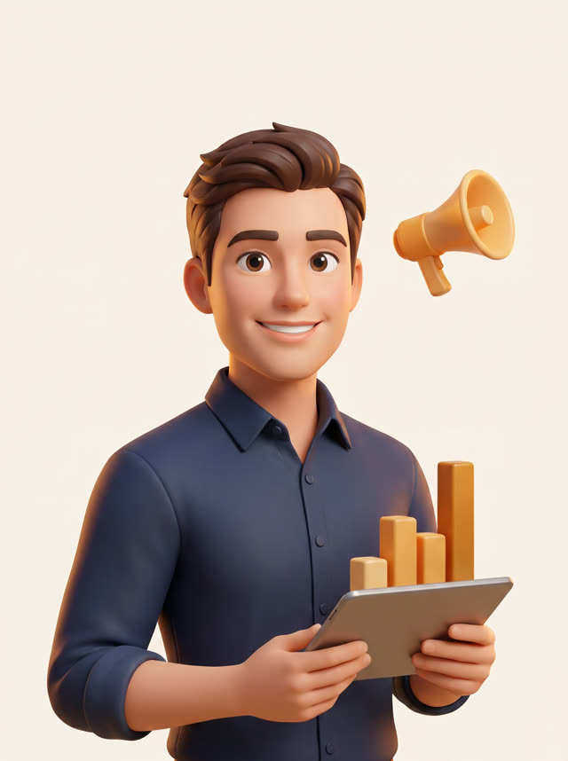
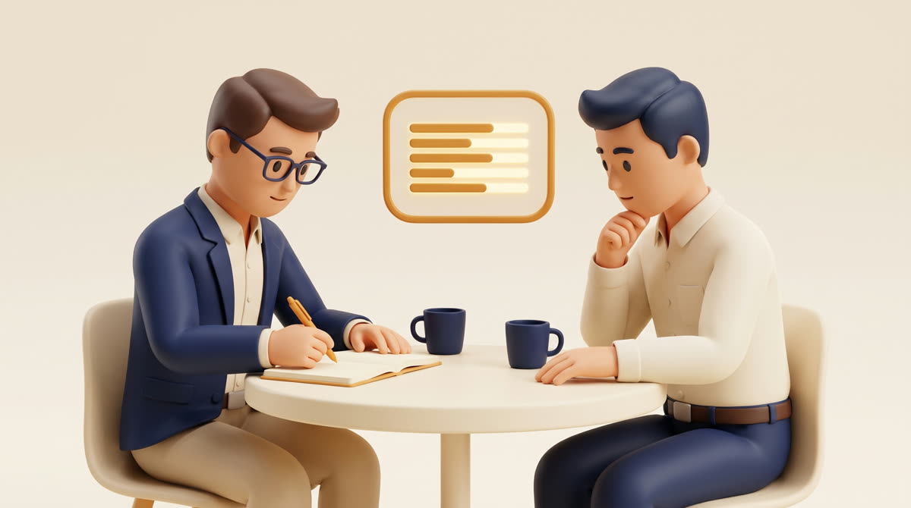

Recepcionista · SDR
Antonia
Contesta tu WhatsApp en segundos, califica al lead con criterio y agenda la reunión directo en tu calendario.
Trabajadores digitales · corredoras de propiedades · Chile
Antonia contesta tu WhatsApp en menos de 1 minuto, a cualquier hora, califica a cada lead y te deja la reunión agendada en el calendario. Tú llegas a vender, no a perseguir.
Antes de instalar nada, medimos un embudo real de corredora durante un mes. Los números del punto de partida:
De cada 100 leads que llegaron, solo 48 lograron una conversación. El resto se enfrió antes de la primera respuesta.
Solo 6 de cada 100 terminaron en una reunión agendada. No por falta de interés: por demora y seguimiento a mano.
Los leads llegan de noche, en fin de semana y en medio de tus visitas. Nadie puede contestar todos, siempre, en minutos. Un equipo digital sí.
⚠ Cada lead sin contestar es plata que ya pagaste — en portal, en aviso o en referido — y que se va donde el corredor que contestó primero.
Cada trabajador digital tiene nombre, cargo y una sola pega que hace bien. Los contratas de a uno, a medida que tu operación crece.
Contesta tu WhatsApp en segundos, califica al lead con criterio y agenda la reunión directo en tu calendario.

Vigila tus campañas todos los días y mueve el presupuesto hacia los avisos que sí traen leads que contestan.
Revisa las conversaciones de Antonia todas las semanas: detecta errores, leads mal calificados y qué mejorar.

Diseña las piezas y variantes de tus avisos, alineadas a tu marca, para que Matías siempre tenga algo nuevo que probar.
Toma nota de cada reunión comercial y deja el registro ordenado: nada de lo que se conversó se pierde.
Evalúa cada reunión con una rúbrica de venta profesional y te dice, con nota, qué se hizo bien y qué faltó.
Junta los patrones de todas tus reuniones y entrena a tu equipo humano con lo que funciona en tu rubro.
Nadie contrata cuatro personas el primer día. El domo se arma capa por capa: partes por donde más te duele y sumas la siguiente cuando la anterior ya se pagó sola.
Capa 1 · Recepción y calificación
Antonia atiende, califica y agenda. Clara la audita cada semana. Es la capa por la que parten todos: es donde hoy se te va la plata.
Antonia + Clara
Capa 2 · Adquisición
Matías revisa tus campañas todos los días y reasigna el presupuesto según los leads que realmente conversan y agendan — no según los clics. Sofía le renueva las piezas para probar ángulos nuevos.
Matías + Sofía

Capa 3 · Inteligencia de reuniones
Amanda documenta lo conversado; Lucas lo evalúa con rúbrica profesional. Dejas de depender de la memoria del vendedor.
Amanda + Lucas
Capa 4 · Coaching
Con 15 reuniones auditadas, Laura sabe qué secuencia cierra más en tu rubro — y entrena a tus vendedores con eso, no con teoría.
Laura
El motor es el mismo; lo que cambia es la configuración para tu negocio.
Medimos tu embudo real: cuántos leads llegan, cuántos contestas y cuántos terminan en reunión. Sin ese número, no hay promesa.
Antonia entra a tu WhatsApp con tu forma de hablar y tus reglas de calificación. Tú apruebas cómo responde antes de que atienda sola.
Cada semana recibes el embudo medido: qué entró, qué se agendó y qué mejorar. Lo que no se mide, no se cobra ni se promete.
Así funciona el Método DOMO: diagnosticar, orquestar, medir y optimizar — contado simple.
No. Antonia toma la pega que hoy nadie alcanza a hacer: contestar en segundos a toda hora. Tus corredores dejan de perseguir leads fríos y llegan a reuniones ya agendadas. Es ampliar el equipo, no reemplazarlo.
Tus conversaciones y contactos son tuyos. Operamos bajo la ley chilena de protección de datos (Ley 21.719), con acceso restringido y sin compartir información con terceros. En el diagnóstico revisamos esto contigo, por escrito.
El diagnóstico toma una reunión. La instalación de la primera capa se hace en días, no meses, porque el motor ya existe: lo que se configura es tu forma de hablar, tus reglas y tu calendario.
El método está probado primero en corredoras, y ahí es donde más evidencia tenemos. Si tu negocio vive de leads por WhatsApp y reuniones, conversemos: el diagnóstico te dice con números si te sirve o no.
Para eso existe Clara: audita las conversaciones cada semana y detecta errores antes de que se repitan. Además defines desde el día uno qué casos Antonia deriva a un humano sin intentar resolverlos sola.
Diagnóstico inicial · una reunión · con tus números
Agenda el diagnóstico: medimos tu embudo y te mostramos, con cifras tuyas, qué haría un equipo digital en tu corredora. Si los números no dan, también te lo decimos.
Agendar diagnóstico